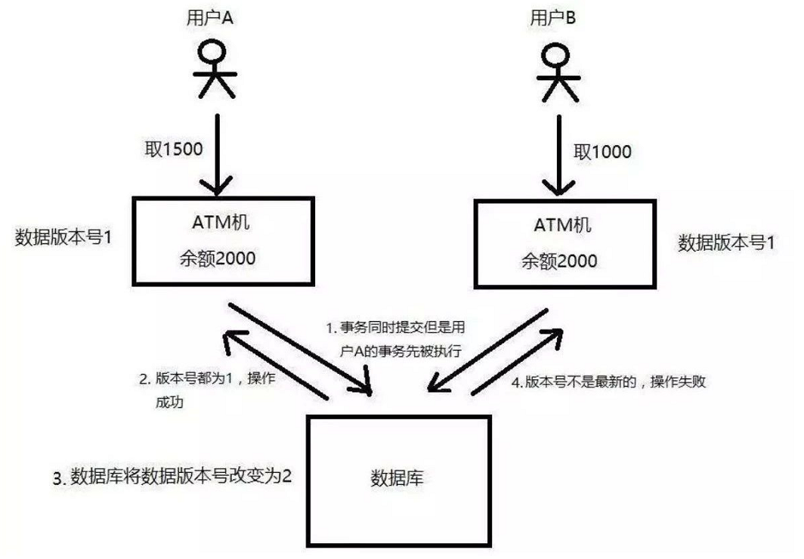
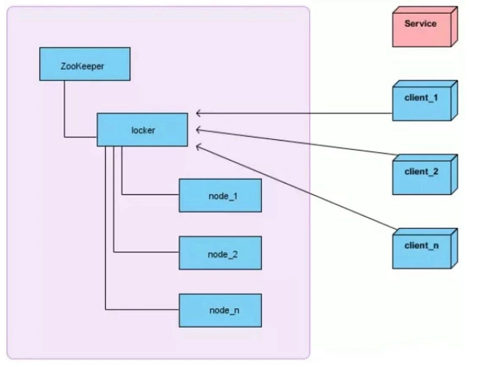

带你玩转分布式锁¶
大多数互联网系统都是分布式部署的，分布式部署确实能带来性能和效率上的提升，但为此，我们就需要多解决一个分布式环境下，数据一致性的问题。 当某个资源在多系统之间，具有共享性的时候，为了保证大家访问这个资源数据是一致的，那么就必须要求在同一时刻只能被一个客户端处理，不能并发的执行，否者就会出现同一时刻有人写有人读，大家访问到的数据就不一致了。
一、我们为什么需要分布式锁？¶
在单机时代，虽然不需要分布式锁，但也面临过类似的问题，只不过在单机的情况下，如果有多个线程要同时访问某个共享资源的时候，我们可以采用线程间加锁的机制，即当某个线程获取到这个资源后，就立即对这个资源进行加锁，当使用完资源之后，再解锁，其它线程就可以接着使用了。例如，在JAVA中，甚至专门提供了一些处理锁机制的一些API（synchronize/Lock等）。
但是到了分布式系统的时代，这种线程之间的锁机制，就没作用了，系统可能会有多份并且部署在不同的机器上，这些资源已经不是在线程之间共享了，而是属于进程之间共享的资源。
因此，为了解决这个问题，我们就必须引入「分布式锁」。
分布式锁，是指在分布式的部署环境下，通过锁机制来让多客户端互斥的对共享资源进行访问。
分布式锁要满足哪些要求呢？
- 排他性：在同一时间只会有一个客户端能获取到锁，其它客户端无法同时获取
- 避免死锁：这把锁在一段有限的时间之后，一定会被释放（正常释放或异常释放）
- 高可用：获取或释放锁的机制必须高可用且性能佳 讲完了背景和理论，那我们接下来再看一下分布式锁的具体分类和实际运用。
二、分布式锁的实现方式有哪些？¶
目前主流的有三种，从实现的复杂度上来看，从上往下难度依次增加：
- 基于数据库实现
- 基于Redis实现
- 基于ZooKeeper实现 无论哪种方式，其实都不完美，依旧要根据咱们业务的实际场景来选择。
1 基于数据库实现：¶
基于数据库来做分布式锁的话，通常有两种做法：
- 基于数据库的乐观锁
- 基于数据库的悲观锁
我们先来看一下如何基于「乐观锁」来实现：¶
乐观锁机制其实就是在数据库表中引入一个版本号（version）字段来实现的。 当我们要从数据库中读取数据的时候，同时把这个version字段也读出来，如果要对读出来的数据进行更新后写回数据库，则需要将version加1，同时将新的数据与新的version更新到数据表中，且必须在更新的时候同时检查目前数据库里version值是不是之前的那个version，如果是，则正常更新。如果不是，则更新失败，说明在这个过程中有其它的进程去更新过数据了。
下面找图举例， 
如图，假设同一个账户，用户A和用户B都要去进行取款操作，账户的原始余额是2000，用户A要去取1500，用户B要去取1000，如果没有锁机制的话，在并发的情况下，可能会出现余额同时被扣1500和1000，导致最终余额的不正确甚至是负数。但如果这里用到乐观锁机制，当两个用户去数据库中读取余额的时候，除了读取到2000余额以外，还读取了当前的版本号version=1，等用户A或用户B去修改数据库余额的时候，无论谁先操作，都会将版本号加1，即version=2，那么另外一个用户去更新的时候就发现版本号不对，已经变成2了，不是当初读出来时候的1，那么本次更新失败，就得重新去读取最新的数据库余额。
通过上面这个例子可以看出来，使用「乐观锁」机制，必须得满足： 1. 锁服务要有递增的版本号version 2. 每次更新数据的时候都必须先判断版本号对不对，然后再写入新的版本号
我们再来看一下如何基于「悲观锁」来实现：¶
悲观锁也叫作排它锁，在Mysql中是基于 for update 来实现加锁的，例如：
//锁定的方法-伪代码 public boolean lock(){ connection.setAutoCommit(false) for(){ result = select * from user where id = 100 for update; if(result){ //结果不为空， //则说明获取到了锁 return true; } //没有获取到锁，继续获取 sleep(1000); } return false; } //释放锁-伪代码 connection.commit();
当这条记录加上排它锁之后，其它线程是无法操作这条记录的。
那么，这样的话，我们就可以认为获得了排它锁的这个线程是拥有了分布式锁，然后就可以执行我们想要做的业务逻辑，当逻辑完成之后，再调用上述释放锁的语句即可。
2.基于Redis实现¶
基于Redis实现的锁机制，主要是依赖redis自身的原子操作，例如：
SET user_key user_value NX PX 100
上述代码示例是指， 当redis中不存在user_key这个键的时候，才会去设置一个user_key键，并且给这个键的值设置为 user_value，且这个键的存活时间为100ms
为什么这个命令可以帮我们实现锁机制呢？ 因为这个命令是只有在某个key不存在的时候，才会执行成功。那么当多个进程同时并发的去设置同一个key的时候，就永远只会有一个进程成功。 当某个进程设置成功之后，就可以去执行业务逻辑了，等业务逻辑执行完毕之后，再去进行解锁。
解锁很简单，只需要删除这个key就可以了，不过删除之前需要判断，这个key对应的value是当初自己设置的那个。
另外，针对redis集群模式的分布式锁，可以采用redis的Redlock机制。
3.基于ZooKeeper实现¶
其实基于ZooKeeper，就是使用它的临时有序节点来实现的分布式锁。
原理就是：当某客户端要进行逻辑的加锁时，就在zookeeper上的某个指定节点的目录下，去生成一个唯一的临时有序节点， 然后判断自己是否是这些有序节点中序号最小的一个，如果是，则算是获取了锁。如果不是，则说明没有获取到锁，那么就需要在序列中找到比自己小的那个节点，并对其调用exist()方法，对其注册事件监听，当监听到这个节点被删除了，那就再去判断一次自己当初创建的节点是否变成了序列中最小的。如果是，则获取锁，如果不是，则重复上述步骤。
当释放锁的时候，只需将这个临时节点删除即可。

如图，locker是一个持久节点，node_1/node_2/…/node_n 就是上面说的临时节点，由客户端client去创建的。 client_1/client_2/…/clien_n 都是想去获取锁的客户端。以client_1为例，它想去获取分布式锁，则需要跑到locker下面去创建临时节点（假如是node_1）创建完毕后，看一下自己的节点序号是否是locker下面最小的，如果是，则获取了锁。如果不是，则去找到比自己小的那个节点（假如是node_2），找到后，就监听node_2，直到node_2被删除，那么就开始再次判断自己的node_1是不是序列中最小的，如果是，则获取锁，如果还不是，则继续找一下一个节点。
以上，就讲完了为什么我们需要分布式锁这个技术，以及分布式锁中常见的三种机制，欢迎大家一起交流。